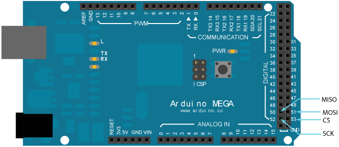
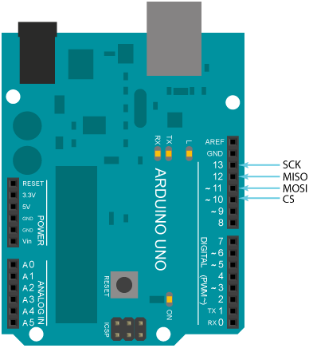

Net Server© 2018, ProtoIt Platform: ARDUINO |
Beschrijving:
Met de net-server kun je de waarde de vier signalen over een netwerk versturen.
ProtoIt maakt daarbij gebruik van de EtherCard software en ondersteunt dezelfde netwerk-modules.
(Een veel gebruikte module is de ENC28J60.) Door de omvang van de EtherCard software kan je
programma onstabiel worden met een Arduino Uno.
De net-server kan de informatie als mini html-pagina verzenden of als xml-tekst. Op de html-pagina worden de signaalwaardes naast de bijbehorende kopjes in een tabel getoond. Boven de tabel staat de titel. In de xml-tekst verschijnt de titel als hoofd-tag en de kopjes met bijbehorende waarde in de sub-tags <name> en <value>.
Let op dat je bij de instellingen van de net-server de juiste CS-pin (= chip select) pin invult. Standaard staat deze op pin 53 voor de Arduino Mega ingesteld. Onderaan deze pagina vind je de correcte aansluiting van de pinnen.
Onderdelen:
Net Server
Op de programmategel:
| Titel | De titel die de net-server verstuurt. |
| Kopje A | Kopje bij de eerste waarde die de net-server verstuurt. |
| Signaal A | Eerste waarde die de net-server verstuurt. |
| Kopje B | Kopje bij de tweede waarde die de net-server verstuurt. |
| Signaal B | Tweede waarde die de net-server verstuurt. |
| Kopje C | Kopje bij de derde waarde die de net-server verstuurt. |
| Signaal C | Derde waarde die de net-server verstuurt. |
| Kopje D | Kopje bij de vierde waarde die de net-server verstuurt. |
| Signaal D | Vierde waarde die de net-server verstuurt. |
| Manier | De manier van verzenden. Dit kan zijn als html-pagina of als xml-tekst. Sleep hier het constante signaal Als html of Als xml naar toe. |
| IP-adres | Dit signaal bevat het ip-adres van de net-server. |
Arduino Mega:

Arduino Uno:
